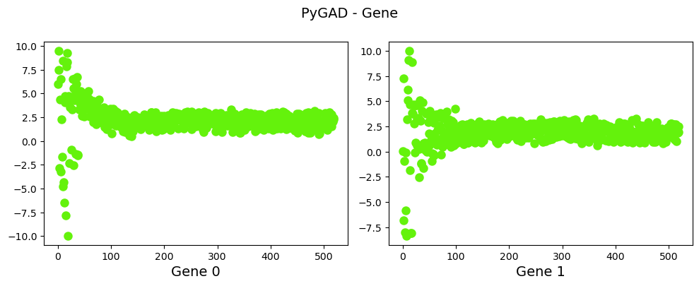

import numpy as np
import matplotlib.pyplot as plt
import warnings
warnings.filterwarnings("ignore", category=UserWarning)
Práctica 2: Optimizar función#
Usaremos el paquete Pygad para hallar óptimos de una función diferenciable.
Objetivo#
Hallar el óptimo de la función
\[
f(x,y)=(x-2)^2+(y-2)^2
\]
Fig. 46 Función de dos variables#
Sabemos que \(f\) tiene un mínimo (local) en el punto \((2,2)\). ¿Cómo?
Vamos a comprobar si el algoritmo genético es capaz de hallar dicho punto.
def fitness_func(ga_instance, solution, solution_idx):
x,y=solution
fvalue = (x-2)**2+(y-2)**2
# maximization problem
return 1/fvalue #attention possible inf
fitness_function = fitness_func
#https://pygad.readthedocs.io/en/latest/README_pygad_ReadTheDocs.html#life-cycle-of-pygad
def on_generation(ga):
print('Generación',ga.generations_completed)
print(ga.population)
def on_start(ga):
print('Starting generation',ga.generations_completed)
print(ga.population)
Parámetros#
https://pygad.readthedocs.io/en/latest/README_pygad_ReadTheDocs.html#pygad-ga-class
num_generations = 25
# num_parents_mating: Number of solutions to be selected as parents.
num_parents_mating = 4
# sol_per_pop: Number of solutions (i.e. chromosomes) within the population.
#This parameter has no action if initial_population parameter exists.
sol_per_pop = 20
population_list=[[10,10],
[-10,-10],
[10,-10],
[-10,10]
]
#num_genes: Number of genes in the solution/chromosome.
#This parameter is not needed if the user feeds the initial population to the initial_population parameter
num_genes = 2
# mutation_num_genes=None: Number of genes to mutate which defaults to None meaning that no number is specified.
mutation_num_genes = 2
#init_range_low=-4: The lower value of the random range from which the gene values
#in the initial population are selected.
#init_range_low defaults to -4.
init_range_low=-10
init_range_high=10
#https://pygad.readthedocs.io/en/latest/README_pygad_ReadTheDocs.html#supported-parent-selection-operations
parent_selection_type= "sss"
#keep_parents=-1: Number of parents to keep in the current population.
#-1 (default) means to keep all parents in the next population.
#0 means keep no parents in the next population.
#A value greater than 0 means keeps the specified number of parents in the next population.
#Note that the value assigned to keep_parents cannot be < - 1
#or greater than the number of solutions within the population sol_per_pop.
keep_parents = 1
#https://pygad.readthedocs.io/en/latest/README_pygad_ReadTheDocs.html#data-type-for-all-genes-without-precision
gene_type=float
#https://pygad.readthedocs.io/en/latest/README_pygad_ReadTheDocs.html#supported-crossover-operations
crossover_type = "two_points"
#https://pygad.readthedocs.io/en/latest/README_pygad_ReadTheDocs.html#supported-mutation-operations
mutation_type="random"
# mutation_percent_genes="default": Percentage of genes to mutate.
#It defaults to the string "default" which is later translated into the integer 10
#which means 10% of the genes will be mutated.
#It must be >0 and <=100.
#Out of this percentage, the number of genes to mutate is deduced
#which is assigned to the mutation_num_genes parameter.
mutation_percent_genes = 10
Definición del algoritmo genético#
import pygad
ga_instance = pygad.GA(num_generations=num_generations,
sol_per_pop=sol_per_pop,
num_parents_mating=num_parents_mating,
fitness_func=fitness_function,
num_genes=num_genes,
mutation_num_genes=mutation_num_genes,
init_range_low=init_range_low,
init_range_high=init_range_high,
parent_selection_type=parent_selection_type,
gene_type=gene_type,
keep_parents=keep_parents,
crossover_type=crossover_type,
mutation_type=mutation_type,
mutation_percent_genes=mutation_percent_genes,
save_solutions=True,
on_generation=on_generation,
on_start=on_start)
Llamada a la optimización#
ga_instance.run()
Show code cell output
Starting generation 0
[[ 5.98925308 0.02663934]
[ 7.45729416 7.24278041]
[ 9.47645667 -6.8478892 ]
[-2.83726068 -0.90293798]
[ 4.37107694 -8.01050384]
[ 6.48533535 -5.85437957]
[-3.22019684 -0.08932856]
[ 2.26862286 -8.33189574]
[-1.62656607 3.21434873]
[ 8.43506974 5.09791406]
[-4.7861794 6.1243218 ]
[-4.33403314 9.07059783]
[-6.47830735 9.98923634]
[ 4.06965623 -1.83928651]
[ 4.7626571 4.64005851]
[-7.80078278 -8.06239272]
[ 7.85095164 -8.09405487]
[ 9.22976599 8.88663085]
[ 8.32261776 3.86100539]
[-9.93954666 3.74034378]]
Generación 1
[[ 4.7626571 4.64005851]
[-2.3069866 4.55938606]
[ 4.69411435 2.78373954]
[ 3.54344517 -0.05811687]
[ 4.27970032 0.92119708]
[-0.91280922 4.68459789]
[ 4.25495921 3.295788 ]
[ 3.34161965 0.60560701]
[ 6.49282199 4.61794166]
[ 5.52845227 3.33148033]
[-2.54633048 -2.51236891]
[ 4.26304262 0.25640911]
[ 6.57668688 5.06831322]
[ 5.06511692 3.07350086]
[-1.36346798 -1.23487505]
[ 6.01783209 -1.14278182]
[ 6.71866165 4.0314276 ]
[-1.39250936 4.890852 ]
[-1.46862553 -1.62213919]
[ 4.63241284 0.7855351 ]]
Generación 2
[[ 3.34161965 0.60560701]
[ 3.96607314 0.87489908]
[ 3.3921209 0.74344427]
[ 5.24977535 0.1130547 ]
[ 4.10172964 3.7869482 ]
[ 4.46436536 -0.04214567]
[ 2.64672487 0.394332 ]
[ 4.44977349 0.74774141]
[ 3.38299306 2.90018842]
[ 2.61344614 1.81427901]
[ 3.98074639 0.69369932]
[ 4.30087623 4.06223471]
[ 3.75366974 3.42017646]
[ 4.24940443 1.17541402]
[ 3.40852664 -0.9242477 ]
[ 5.03296346 -0.19001349]
[ 4.08484438 1.03857792]
[ 5.26861025 -0.20769854]
[ 4.46242344 -0.37286965]
[ 3.38585622 2.84432287]]
Generación 3
[[ 2.61344614 1.81427901]
[ 4.28937566 1.19111736]
[ 3.21338115 3.46883834]
[ 2.94009938 3.66023322]
[ 2.59473206 0.68037698]
[ 3.97104898 2.14640068]
[ 4.21588782 3.66084623]
[ 1.95226059 3.3900525 ]
[ 2.58344759 1.24741495]
[ 3.31482349 2.59625133]
[ 3.5429108 3.78906803]
[ 3.46453007 3.83900557]
[ 1.78999849 -0.2981856 ]
[ 3.7817514 2.11225517]
[ 2.55424071 3.33595948]
[ 3.54724031 0.50327322]
[ 1.98363212 1.47312749]
[ 4.37173188 0.87281498]
[ 3.38513741 3.25321563]
[ 3.30512101 0.79043984]]
Generación 4
[[1.98363212 1.47312749]
[2.56156321 1.85215394]
[2.42374771 1.16532477]
[1.99374251 4.00117016]
[2.43743875 2.6971915 ]
[2.73803978 1.15662653]
[2.5643264 0.64957401]
[3.52370708 3.20366968]
[1.47975094 2.52516838]
[3.05323173 2.39032197]
[2.43005172 1.96678448]
[1.44529165 0.49462909]
[1.210457 3.03575615]
[1.73906565 1.83347054]
[3.05425496 2.18099598]
[2.31010928 2.90784513]
[2.9159008 0.60371627]
[2.65247267 1.36873396]
[3.40890338 0.77075187]
[2.93279396 4.27086369]]
Generación 5
[[1.73906565 1.83347054]
[0.82924725 2.31879111]
[1.88673048 1.79646759]
[3.32062485 0.89864843]
[3.42350523 1.69870155]
[2.76552279 1.57329114]
[2.60401093 1.00956847]
[2.7586146 2.01124787]
[3.18241 1.11668296]
[1.62623961 2.64619094]
[2.80603991 2.31976314]
[2.19480514 0.93552915]
[2.99382828 2.73466464]
[1.95540694 1.84108327]
[2.13355985 0.75895911]
[2.22009756 0.72842745]
[2.3574914 2.4154408 ]
[2.01576948 1.23467406]
[2.66648048 2.24687698]
[1.47945566 1.99397866]]
Generación 6
[[1.95540694 1.84108327]
[1.62772863 2.73668147]
[2.39103112 0.87788556]
[1.01283276 0.86793978]
[2.43651864 0.9949779 ]
[2.85900531 1.73135509]
[1.61570329 1.64169667]
[0.97442358 2.75424295]
[1.32949536 2.87436182]
[2.60963873 2.50094874]
[1.08765295 1.37382986]
[2.18083067 2.01595688]
[2.0913961 2.53735934]
[0.95552684 1.61740778]
[1.80245503 0.95128429]
[0.56147645 0.86287524]
[2.17817555 2.4007343 ]
[1.94697957 2.49093587]
[1.91208941 2.72777576]
[0.51533565 1.13590626]]
Generación 7
[[1.95540694 1.84108327]
[1.03200834 1.61745571]
[2.6507864 2.82684143]
[1.61477492 2.72891161]
[2.70907991 2.99573663]
[2.24965112 2.6280432 ]
[2.10901183 1.29242009]
[2.17061877 1.92955382]
[1.96865898 0.86486876]
[1.67397354 1.62436072]
[2.52352839 2.62545447]
[2.00760183 2.60864202]
[1.91905508 1.11205093]
[1.77159797 2.68913655]
[2.07488952 2.10969851]
[2.08034061 1.55778183]
[1.23933495 1.71945173]
[2.20392822 2.2772917 ]
[1.6355854 2.52039646]
[2.46869356 1.91012205]]
Generación 8
[[2.07488952 2.10969851]
[2.5948209 2.76015979]
[2.76827695 1.67829162]
[2.68875732 1.59516841]
[2.31522268 2.46931716]
[1.96961409 2.17773398]
[2.51763908 1.55530347]
[2.44200274 2.65893214]
[2.25352174 2.08289286]
[2.49156444 2.73933688]
[1.41998114 1.47165026]
[2.69160216 2.6101655 ]
[1.13812481 1.42934704]
[1.57321848 2.22941472]
[2.49102284 1.23741726]
[3.00151121 0.98127656]
[3.02301915 2.04942576]
[2.46736086 1.79313804]
[1.82082053 0.84292463]
[1.53433828 2.74645065]]
Generación 9
[[2.07488952 2.10969851]
[2.84146797 1.49515895]
[1.93067039 2.97720271]
[3.02896846 1.47196604]
[2.26904806 1.1910481 ]
[1.00030626 2.13526308]
[1.89768265 1.28747924]
[2.07766754 3.13071503]
[2.35681317 1.76008188]
[1.54277238 1.49704204]
[2.42134184 2.45086472]
[2.16238856 1.40862155]
[1.53163147 2.09091303]
[1.83720399 1.44549841]
[2.67007762 2.07325719]
[1.1521392 2.83789402]
[1.46783576 1.2335659 ]
[1.84818005 1.93798697]
[1.2673892 2.61258724]
[2.63013903 2.7646363 ]]
Generación 10
[[2.07488952 2.10969851]
[1.50543949 1.52279058]
[1.83107206 2.4061842 ]
[2.50963106 2.60692384]
[1.53020497 3.09064373]
[1.99108221 2.35912364]
[1.85164706 1.90903922]
[2.7271541 1.64261254]
[2.19344198 3.06729726]
[1.581048 1.59667564]
[2.47667237 2.56289404]
[2.69057633 2.79221298]
[1.14720814 2.32459018]
[1.55049424 1.53472051]
[1.54017444 1.29788195]
[1.94814129 1.17847871]
[2.99775333 2.6501709 ]
[2.86884692 2.59691845]
[2.67928522 2.24851216]
[2.09713712 2.17139238]]
Generación 11
[[2.07488952 2.10969851]
[2.4513184 3.08711711]
[2.97669488 1.0361985 ]
[2.55528817 1.75010996]
[2.58398096 2.77078459]
[2.28471292 2.70408913]
[1.29917253 1.87126508]
[2.26841933 2.12379945]
[2.84927003 2.69672913]
[2.78679756 2.24707113]
[2.20181877 1.74804993]
[2.5055017 1.41269204]
[2.47290956 1.76082832]
[2.39721443 1.69805761]
[2.69537528 1.42271551]
[1.63893369 2.46900732]
[2.72064843 2.65158597]
[1.30556834 1.38293179]
[2.24718826 2.41236835]
[2.99627456 2.80027682]]
Generación 12
[[2.07488952 2.10969851]
[2.39404393 1.92346408]
[2.33158934 1.89770804]
[3.13164251 1.77073364]
[2.35142247 2.80093919]
[2.63286374 1.78786398]
[1.89121525 2.40336371]
[2.74207519 0.84121363]
[2.65364759 2.77643512]
[2.15791581 1.91591994]
[2.80195629 2.53891179]
[1.21149362 2.65114653]
[3.07146208 1.6318681 ]
[2.96759767 2.35166001]
[2.29666106 2.1601548 ]
[1.60930666 2.1117468 ]
[1.77603489 1.86850586]
[2.07310372 1.54801446]
[2.22031884 1.35182792]
[1.54039468 3.16772821]]
Generación 13
[[2.07488952 2.10969851]
[2.59737664 1.1466204 ]
[2.12676768 2.43572933]
[1.6355762 0.98429092]
[3.04697556 1.23243676]
[1.84151473 2.12394858]
[1.66169344 2.84572112]
[1.65898126 2.11956814]
[1.56601444 2.21573411]
[1.54635643 1.01315873]
[2.0244715 2.14311584]
[2.38941792 2.83015174]
[2.56158205 2.27297004]
[1.19398769 1.44968093]
[0.9729458 2.33793439]
[3.13269932 1.18539184]
[1.90691014 2.25476296]
[1.66795034 2.88947794]
[2.10703207 1.70905267]
[1.40527 1.44032239]]
Generación 14
[[2.07488952 2.10969851]
[2.16476965 1.25687641]
[2.9556789 2.21055476]
[2.55403816 3.01533597]
[2.57647782 3.01727725]
[1.84166784 2.69465265]
[1.86051853 1.93421389]
[1.94982374 1.98321387]
[2.08291027 1.44012522]
[1.99423079 1.66062098]
[1.88981366 1.72757104]
[2.44667759 1.91299117]
[1.90671518 2.19449781]
[1.97699505 2.62601682]
[1.75061064 1.52390682]
[2.00927288 3.09488496]
[1.00902197 2.0394875 ]
[2.97644106 2.32567218]
[2.33242372 1.7585212 ]
[1.45817391 2.87568335]]
Generación 15
[[1.94982374 1.98321387]
[1.77367607 1.59670528]
[2.17493775 2.68336427]
[1.65008674 3.16276235]
[1.38464519 2.00927929]
[2.33895303 2.58053213]
[2.95277099 2.37146531]
[2.06697101 2.33829364]
[0.94924448 1.41977927]
[1.30575088 2.37816748]
[2.19600566 2.59250441]
[1.90494039 1.40282907]
[1.96218247 1.3128849 ]
[2.33899818 2.96504449]
[2.36475871 1.93696592]
[2.38788208 1.22023689]
[2.68742043 1.37487083]
[2.74168861 1.34119779]
[2.51323062 2.08422016]
[1.63442982 2.49323724]]
Generación 16
[[1.94982374 1.98321387]
[1.72555371 3.11210612]
[2.68719297 1.65032947]
[1.85128316 2.33392241]
[2.29592783 1.28099791]
[2.03183654 3.23362858]
[3.34281735 3.15063045]
[1.9660707 2.45254071]
[0.9506563 1.83045136]
[2.01231367 1.24154014]
[1.87608098 2.36882266]
[1.83282992 2.28526743]
[1.06995763 2.55141787]
[2.87395899 1.65231048]
[1.41302306 1.81382222]
[1.48872666 2.22671085]
[2.12812214 0.8234095 ]
[2.39413197 2.41979394]
[2.32197974 1.97635779]
[1.22087649 1.93370837]]
Generación 17
[[1.94982374 1.98321387]
[1.92807504 1.55246425]
[0.83881911 2.53603507]
[0.90352178 1.45693089]
[2.32327811 2.42669709]
[1.74935395 2.83284868]
[2.81514506 1.40405465]
[2.50284393 2.6939014 ]
[1.32332851 3.17488047]
[2.62626992 1.36435709]
[1.24104925 0.98631962]
[1.13620432 2.7873826 ]
[2.67406899 1.68373229]
[2.03643397 2.37940293]
[3.02431584 1.39199033]
[2.75149702 1.44536215]
[1.5708462 1.78379721]
[2.6012401 2.5097868 ]
[1.56702633 2.22227275]
[2.81791072 3.25215642]]
Generación 18
[[1.94982374 1.98321387]
[2.92579112 2.64612658]
[2.02577648 1.75638606]
[2.78923017 1.84779469]
[1.64605741 1.16623382]
[2.04499826 1.74189619]
[2.80435703 0.58535261]
[1.63804723 1.15472555]
[2.03855848 1.55734439]
[2.85945645 2.76488911]
[2.34928149 1.10112326]
[1.04599595 2.11595335]
[2.46841923 1.23718989]
[1.38296691 1.88065288]
[1.13964624 1.44466219]
[1.28482606 2.38169968]
[2.00177466 2.23908485]
[2.81435248 2.77273621]
[1.35428745 2.54256101]
[1.28320913 2.2877463 ]]
Generación 19
[[1.94982374 1.98321387]
[2.82372916 1.13304744]
[2.53962534 2.14675978]
[1.3335754 2.63232625]
[1.39244154 1.16738877]
[1.31408012 2.11212156]
[2.54749616 2.50042308]
[1.15727195 1.04092201]
[1.68407665 2.21346026]
[2.47072109 2.51562715]
[2.20093764 1.84515667]
[2.67047176 1.67607527]
[2.14692443 2.29673834]
[1.63593368 2.32764393]
[1.38240379 1.52068751]
[1.48156062 1.53468357]
[1.33988505 0.97261362]
[2.87807292 2.02215121]
[2.02461411 1.55894269]
[2.15966704 2.15146662]]
Generación 20
[[1.94982374 1.98321387]
[2.83956091 2.43268531]
[2.83973136 2.3404108 ]
[2.98553953 2.02383993]
[1.14233084 1.39970055]
[2.44256933 1.70116034]
[2.28805917 1.71525127]
[2.90796481 2.91171098]
[1.30931126 1.52582641]
[1.76955771 0.98986645]
[1.86293069 2.21618788]
[2.99533697 1.82918212]
[1.32434629 1.30960853]
[2.24998726 2.29881483]
[1.97869902 1.41511064]
[1.53768006 2.80482381]
[2.28199622 1.11106184]
[2.03121932 2.79491664]
[2.35794675 1.81849757]
[1.35221635 1.72567153]]
Generación 21
[[1.94982374 1.98321387]
[2.78232884 1.97104258]
[2.04136603 1.2539867 ]
[3.07153923 0.94140825]
[1.69099372 2.17097285]
[2.45592615 1.66342163]
[3.03530263 2.603811 ]
[2.81399474 2.21689737]
[1.73006729 1.16645049]
[1.2331319 2.10109245]
[2.89897581 3.12294383]
[1.91387738 1.59704356]
[1.49677037 0.91087404]
[1.70076814 3.04762336]
[2.0829333 1.68282512]
[2.61885791 1.48778071]
[1.39259605 1.71658467]
[1.3863356 1.75105479]
[1.79432189 3.2933967 ]
[2.29146516 1.64579672]]
Generación 22
[[1.94982374 1.98321387]
[1.62403007 1.73074844]
[1.88311977 1.19055619]
[2.42593049 2.73400368]
[1.29215067 1.5834955 ]
[1.07860894 0.90729344]
[2.05618757 1.78652661]
[1.80702404 2.06828478]
[1.78098519 1.4066839 ]
[1.71472609 2.55792495]
[2.84589756 2.2913945 ]
[0.88211944 2.56859195]
[1.29962616 1.18464798]
[2.89811067 1.50441025]
[2.23144241 2.10485668]
[1.28624839 0.91710943]
[1.58994053 1.1689401 ]
[1.55809955 1.47207492]
[2.42088522 1.87851301]
[1.69427625 2.31527524]]
Generación 23
[[1.94982374 1.98321387]
[1.8754658 2.94006037]
[1.64256934 2.47124707]
[1.39762866 2.03784292]
[2.70705853 2.60878659]
[1.00195937 2.35311982]
[1.73742231 1.30124541]
[2.98694276 1.27355103]
[1.34913227 1.65196146]
[2.93072592 1.98534749]
[0.84528905 1.39055022]
[3.05311432 0.97142697]
[2.43631556 1.66356877]
[1.07246621 2.15294294]
[0.85506224 2.11539194]
[2.97653258 0.94226759]
[1.93315795 1.8004111 ]
[1.54190302 2.88706428]
[1.1426225 2.15861415]
[1.26079873 1.35134487]]
Generación 24
[[1.94982374 1.98321387]
[1.65029578 1.64698173]
[3.15234373 2.13345644]
[2.02398447 1.07029182]
[2.58148713 1.64968917]
[2.71756049 2.2538639 ]
[1.6004432 1.96657785]
[2.11284993 2.26288709]
[1.24460655 1.82811567]
[1.61333272 0.80218318]
[2.96441177 2.06519578]
[0.69341816 1.17335553]
[0.76453509 1.22618028]
[1.48659905 1.86969547]
[2.1600007 0.94101992]
[2.06168777 1.71078016]
[1.58352889 1.71622495]
[1.38223663 2.1555644 ]
[1.92784786 2.40238572]
[2.07989715 1.72222362]]
Generación 25
[[1.94982374 1.98321387]
[1.99447778 1.66453453]
[2.80999447 1.61640973]
[2.93828714 1.98671617]
[1.44099035 2.79334736]
[2.02956492 2.74588086]
[1.59564535 2.63457089]
[1.14081181 1.61772633]
[2.88058691 1.39196211]
[2.75634334 2.73931116]
[3.02939156 1.22498953]
[2.03917778 2.02419621]
[1.87361284 1.15403334]
[2.25415934 2.6894963 ]
[1.55943021 2.21354102]
[2.77945329 1.04576135]
[1.97856266 2.50662187]
[2.04547515 1.85163472]
[2.42204126 2.47116874]
[2.29547154 1.92084632]]
Resultados#
solution, solution_fitness, solution_idx = ga_instance.best_solution()
print("best_solution: {solution}".format(solution =solution))
best_solution: [2.03917778 2.02419621]
print("best_solution fitness: {}".format(solution_fitness))
print("Valor de f: {}".format(1/solution_fitness))
best_solution fitness: 471.6190827087269
Valor de f: 0.00212035525419484
solution_idx
11
ga_instance.plot_fitness()
plt.close()
No artists with labels found to put in legend. Note that artists whose label start with an underscore are ignored when legend() is called with no argument.
ga_instance.plot_genes(plot_type="scatter")
plt.close()

ga_instance.population
array([[1.94982374, 1.98321387],
[1.99447778, 1.66453453],
[2.80999447, 1.61640973],
[2.93828714, 1.98671617],
[1.44099035, 2.79334736],
[2.02956492, 2.74588086],
[1.59564535, 2.63457089],
[1.14081181, 1.61772633],
[2.88058691, 1.39196211],
[2.75634334, 2.73931116],
[3.02939156, 1.22498953],
[2.03917778, 2.02419621],
[1.87361284, 1.15403334],
[2.25415934, 2.6894963 ],
[1.55943021, 2.21354102],
[2.77945329, 1.04576135],
[1.97856266, 2.50662187],
[2.04547515, 1.85163472],
[2.42204126, 2.47116874],
[2.29547154, 1.92084632]])